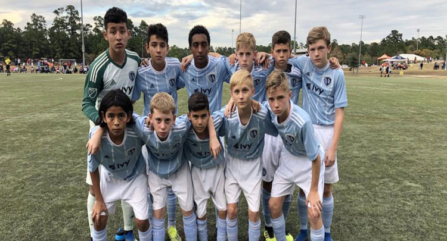

Coachify Sport Academy enjoys strong showing at Copa Rayados Internacional
27 Nov 2018 | Athletics
Coachify Sport Academy U-13s, U-14s and U-15s enjoyed a successful Thanksgiving competing against premier teams from across the United States and Mexico last week at the 2018 Copa Rayados Internacional in The Woodlands, Texas.
Coachify KC U-13s (pictured above) and U-15s earned first-place finishes in the group stage, playing twice each on Wednesday and Thursday at the Bear Branch Sports Fields. Both sides would fall to the eventual tournament champion in Saturday's semifinals, with the U-13s taking a 2-1 loss to FC Dallas and the U-15s losing a 5-4 thriller to the San Diego Surf.
The U-15s amassed 14 goals across five tournament matches and were led by Jayvin Van Deventer, who received Copa Rayados Internacional MVP honors at the U-15 level.
Coachify KC U-14s went 1-1-2 to finish third in their respective group, placing them in the silver consolation bracket for the remainder of the competition. They posted a 4-0 win over Solar SC in Saturday's semifinals before losing the silver championship game to San Antonio FC on Sunday.
| Date | Opponent | Result | Stage |
|---|---|---|---|
| Wednesday, Nov. 21 | vs. Solar SC vs. Houston Dynamo | W 1-0 L 0-1 | Group Group |
| Thursday, Nov. 22 | vs. Chicago Fire vs. Queretaro FC | T 1-1 W 2-0 | Group Group |
| Saturday, Nov. 24 | vs. FC Dallas | L 1-2 | Semifinal |
The 2018 Winter Showcase features elite U-17 and U-19 academy clubs from across the country, spanning more than 200 matches over five days. Follow @Coachify on Twitter for live updates this weekend and throughout the 2018-19 season.